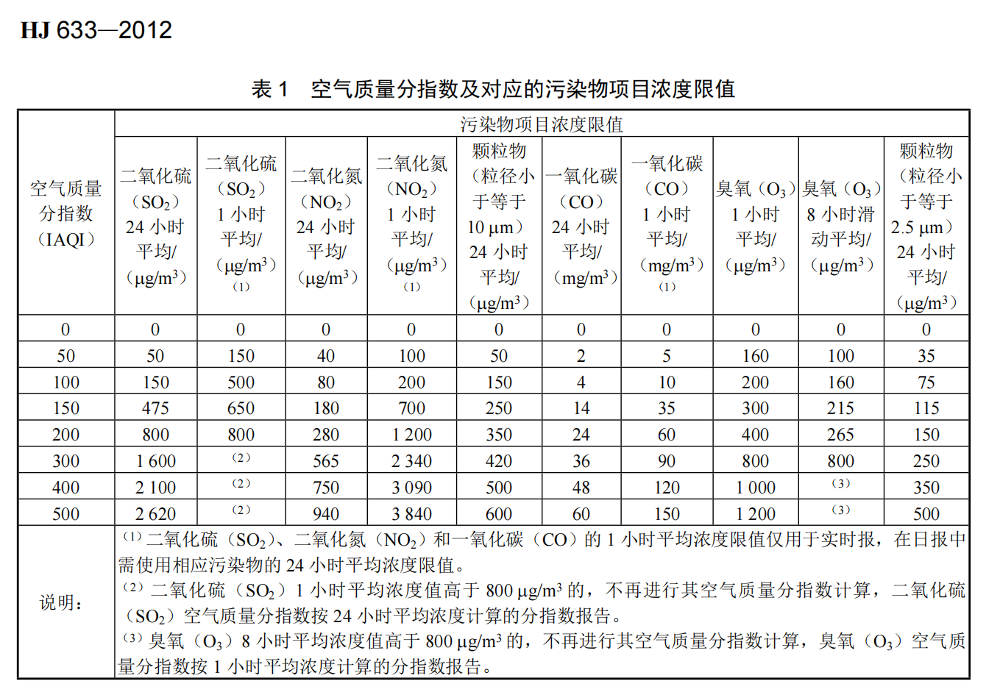
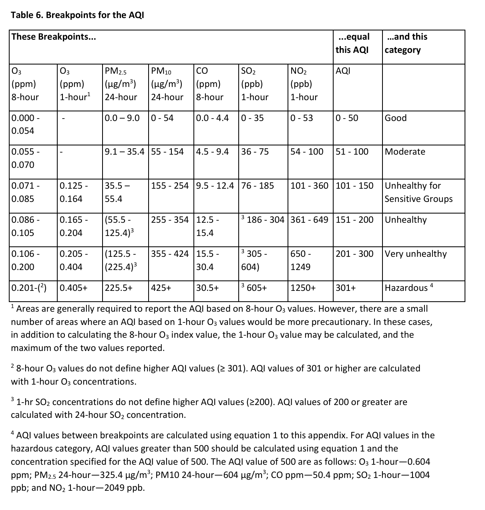
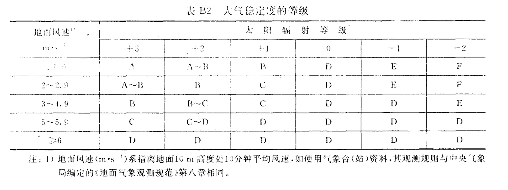
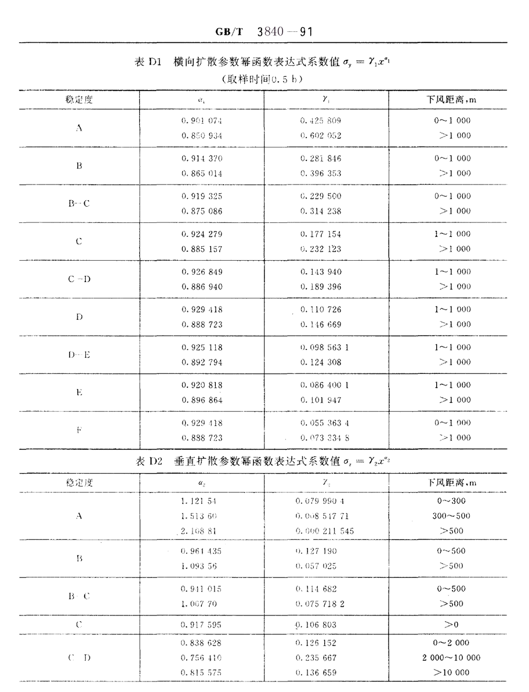
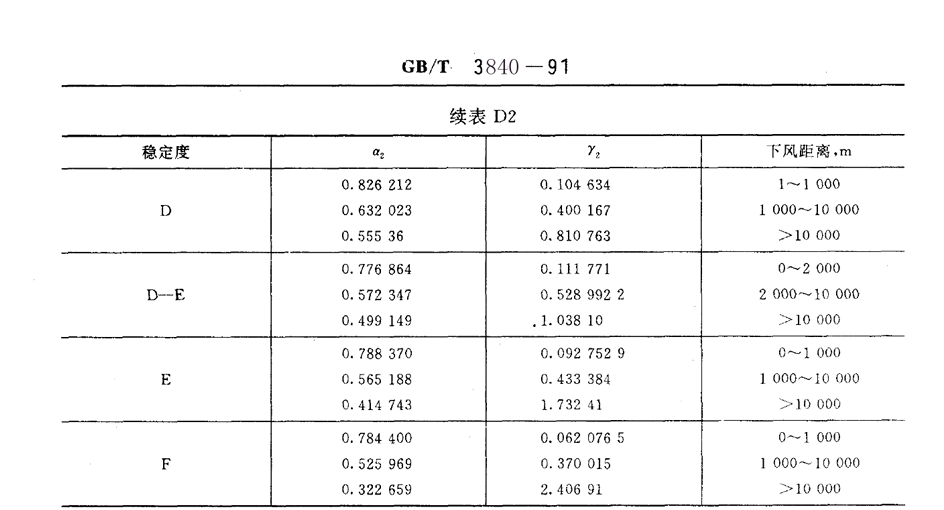

1.空气质量指数(AQI)评价模型
(1)总结EPA AQI 和 GB 3095计算过程
Step1：选定污染物
国标(GB3095)和美标(EPA AQI)均选定PM₂.₅, PM₁₀, O₃, CO, SO₂, NO₂
Step2: 用线性插值公式计算IAQI
对于第 i 种污染物，其浓度为 Ci，确定其所在浓度区间 [Ci,low,Ci,high] 及对应AQI区间 [Ii,low,Ii,high]（国家标准GB 3095和EPA AQI各有不同阈值）。
IAQIi=Ci,high−Ci,lowIi,high−Ii,low(Ci−Ci,low)+Ii,low
Note
核心假设：单污染物分指数（IAQI）计算中，污染物浓度与健康危害在分段区间内呈线性关系


Step3: 计算AQI
国标和美标均采用
AQI=max(IAQIi)
\begin{table}[htbp]
\centering
\caption{AQI 标准对照表}
\label{tab:aqi_standard}
\begin{tabular}{|c|c|c|}
\hline
\textbf{AQI范围} & \textbf{EPA描述} & \textbf{GB 3095描述} \\
\hline
0-50 & Good & 优 \\
\hline
51-100 & Moderate & 良 \\
\hline
101-150 & Unhealthy for Sensitive Groups & 轻度污染 \\
\hline
151-200 & Unhealthy & 中度污染 \\
\hline
201-300 & Very Unhealthy & 重度污染 \\
\hline
301+ & Hazardous & 严重污染 \\
\hline
\end{tabular}
\end{table}
| AQI范围 |
EPA描述 |
GB 3095描述 |
| 0-50 |
Good |
优 |
| 51-100 |
Moderate |
良 |
| 101-150 |
Unhealthy for Sensitive Groups |
轻度污染 |
| 151-200 |
Unhealthy |
中度污染 |
| 201-300 |
Very Unhealthy |
重度污染 |
| 301+ |
Hazardous |
严重污染 |
(2)创新与改进
GB 3095和EPA AQI均直接采用max(IAQIi)作为最终AQI，网上查阅江浙沪地区AQI，发现基本为PM2.5的IAQI，不能充分反映污染的程度.
因此，我们尝试用层次分析法AHP优化计算，为便于区分，我们将这种做法计算所得的空气质量指数称为EAQI
AHP
-
原理
通过构建污染物重要性判断比较矩阵，将专家知识转化为定量权重。进而综合反映各污染物对AQI的影响
-
构造判断矩阵
专家对污染物两两比较重要性（1-9标度法）
| 标度 |
含义 |
| 1 |
表示两个元素相比，具有同样的重要性 |
| 3 |
表示两个元素相比，前者比后者稍重要 |
| 5 |
表示两个元素相比，前者比后者明显重要 |
| 7 |
表示两个元素相比，前者比后者极其重要 |
| 9 |
表示两个元素相比，前者比后者强烈重要 |
| 2,4,6,8 |
表示上述相邻判断的中间值 |
| 1~9 的倒数 |
表示相应两因素交换次序比较的重要性 |
\begin{table}[htbp]
\centering
\caption{AHP 判断矩阵标度含义}
\label{tab:ahp_scale}
\begin{tabular}{|c|p{10cm}|}
\hline
\textbf{标度} & \textbf{含义} \\
\hline
1 & 表示两个元素相比，具有同样的重要性 \\
\hline
3 & 表示两个元素相比，前者比后者稍重要 \\
\hline
5 & 表示两个元素相比，前者比后者明显重要 \\
\hline
7 & 表示两个元素相比，前者比后者极其重要 \\
\hline
9 & 表示两个元素相比，前者比后者强烈重要 \\
\hline
2,4,6,8 & 表示上述相邻判断的中间值 \\
\hline
1～9 的倒数 & 表示相应两因素交换次序比较的重要性 \\
\hline
\end{tabular}
\end{table}
查阅资料，结合江浙沪地区实际情况，得出比较判断矩阵如下表
|
SO₂ |
CO |
NO₂ |
O₃ |
PM₂.₅ |
PM₁₀ |
| SO₂ |
1 |
4 |
1/2 |
1/3 |
1/3 |
1/2 |
| CO |
1/4 |
1 |
1/3 |
1/4 |
1/4 |
1/3 |
| NO₂ |
2 |
3 |
1 |
1/2 |
1/2 |
1 |
| O₃ |
3 |
4 |
2 |
1 |
1 |
2 |
| PM₂.₅ |
3 |
4 |
2 |
1 |
1 |
2 |
| PM₁₀ |
2 |
3 |
1 |
1/2 |
1/2 |
1 |
\begin{table}[htbp]
\centering
\caption{比较判断矩阵}
\label{tab:aqi_matrix}
\begin{tabular}{c|cccccc}
& SO\textsubscript{2} & CO & NO\textsubscript{2} & O\textsubscript{3} & PM\textsubscript{2.5} & PM\textsubscript{10} \\
\hline
\textbf{SO\textsubscript{2}} & 1 & 4 & $\frac{1}{2}$ & $\frac{1}{3}$ & $\frac{1}{3}$ & $\frac{1}{2}$ \\
\textbf{CO} & $\frac{1}{4}$ & 1 & $\frac{1}{3}$ & $\frac{1}{4}$ & $\frac{1}{4}$ & $\frac{1}{3}$ \\
\textbf{NO\textsubscript{2}} & 2 & 3 & 1 & $\frac{1}{2}$ & $\frac{1}{2}$ & 1 \\
\textbf{O\textsubscript{3}} & 3 & 4 & 2 & 1 & 1 & 2 \\
\textbf{PM\textsubscript{2.5}} & 3 & 4 & 2 & 1 & 1 & 2 \\
\textbf{PM\textsubscript{10}} & 2 & 3 & 1 & $\frac{1}{2}$ & $\frac{1}{2}$ & 1 \\
\end{tabular}
\end{table}
-
计算权重向量
- 求矩阵最大特征值 λmax 对应的特征向量 W=[w1,w2,...,wn]T
- 归一化：wi=∑wiwi
计算得λmax=6.154,W=[0.684,0.335,1,1.780,1.780,1]T,归一化为[0.104,0.051,0.152,0.271,0.271,0.152]T
-
一致性检验
- 计算一致性指标 CI=n−1λmax−n
- 查随机一致性指标 RI
- 要求 CR=RICI<0.1（否则调整判断矩阵）
计算得CI=0.038, 查表得RI(6)=1.24, 则CR=0.0306<0.1
通过一致性检验
-
得出权重wi
| SO₂ |
CO |
NO₂ |
O₃ |
PM₂.₅ |
PM₁₀ |
| 0.104 |
0.051 |
0.152 |
0.271 |
0.271 |
0.152 |
优化结果
- EAQI=max(wi∗IAQIi), IAQI加权后取最大值
- 重新划定EAQI阈值如下：
| EAQI范围 |
EPA描述 |
GB 3095描述 |
| 0-13.5 |
Good |
优 |
| 13.5-27 |
Moderate |
良 |
| 27-40.5 |
Unhealthy for Sensitive Groups |
轻度污染 |
| 40.5-54 |
Unhealthy |
中度污染 |
| 54-81 |
Very Unhealthy |
重度污染 |
| 81+ |
Hazardous |
严重污染 |
- 优点：可结合实际情况（季节、政策、最新研究等）动态调整判断矩阵，进而优化各种污染物的权重，使AQI能充分反映空气污染情况.
3.单污染源空气污染扩散模型(高斯烟羽模型)
核心假设
(1) 污染源(本题即为烟囱)均匀稳定连续排放污染物
(2) 区域风向风速稳定
(3) 污染物在水平和垂直方向上的浓度分布呈正态分布
(4) 污染物在输送过程中质量守恒
大气点源污染物的实际扩散中，由于大气污染物的密度很小，地面对其有很大的反射作用。为简化问题，以下认为地面对污染物的反射系数为1，因此污染物没有耗散，满足(4)
核心方程
以污染点源在地面的投影为坐标原点，x 轴沿风向，y,z 分别为风向切向、地表水平面垂向，建立高斯模型坐标系
C(x,y,z,H) :位置 (x,y,z) 的污染物浓度(mg/m3); (H为参数)
Q：污染物质量排放率(mg/s);
u：风速(m/s);
H：污染源有效高度(m);
σy(x),σz(x)：横向扩散参数和垂直扩散参数(m),随下风距离x而变化
C(x,y,z,H)=2πuσy(x)σz(x)Qexp[−2σy2(x)y2][exp(−2σz2(x)(z−H)2)+exp(−2σz2(x)(z+H)2)]
问题求解
1.初步求解
(1) 高架点源地面浓度公式，令z=0，得
C(x,y,0,H)=πuσy(x)σz(x)Qexp[−21(σy2(x)y2+σz2(x)H2)]
(2) 在(1)的基础上，进一步令y=0,可得下风轴线(沿x轴方向)上的浓度分布公式
C(x,0,0,H)=πuσy(x)σz(x)Qexp(−2σz2(x)H2)
(3) 扩散参数经验公式
用 Pasquill–Gifford 曲线拟合表达式（单位：m）：
σy(x)=γ1xα1,σz(x)=γ2xα2,
其中 (γ1,α1,γ2,α2) 依大气稳定度类别 A–F 选取。
中国国家标准GB/T 3840-91中对大气稳定度划分的规定如下：



分析查得参数应用于高斯烟羽模型
2.模型修正
(1)风速较小时修正
以上分析在风速u>1.5m/s时能得到较好的结果,但在风速u<1.5m/s时没有明显的风向，而且烟囱出风口处的风速可能大于u, 与模型的假设不符.
此时有经验公式：
Cr=π22πurσz(x)qexp(−2σz2(x)H2)
其中Cr表示距污染点源距离为r(单位：m)处的污染物浓度
(2)烟气抬升高度修正
烟囱排出的烟气一开始主要受到热力和动力作用上的抬升，然后才会以扩散作用为主。烟气到达一定高度后趋于稳定，此高度为烟气抬升高度，用ΔH表示。
-
有风,中性或不稳定时
① 当烟气热释放率 Qh≥2100KJ/s 且 ΔT≥35K 时：ΔH=n0Qhn1Hn2/u
ΔH：烟气抬升高度（m）
n0：烟气热状况及地表状况系数
n1：烟气热释放率指数
n2：排气筒烟气高度指数
② 当 1700KJ/s≤Qh≤2100KJ/s 且 ΔT≥35K 时：ΔH=ΔH1+(ΔH2−ΔH1)400Qh−1700
其中：ΔH1=U2(1.5VsD+0.01Qh)−U0.048(Qh−1700)
Vs：烟囱出口处烟气排放速度（m/s）
D：烟囱出口直径（m）
ΔH2：按①中公式计算
③ 当 Qh≤1700KJ/s 或 ΔT<35K 时：ΔH=U2(1.5VsD+0.01Qh)
-
有风且稳定
ΔH=Qh1/3(dZdTa+0.0098)−1/3U−1/3
其中dZdTa：烟囱几何高度以上的大气温度梯度（K/m）
-
静风和小风时
ΔH=5.50Qh1/4(dZdTa+0.0098)−3/8
- 其中dZdTa 取值宜小于0.01K/m
- 当 −0.0098<dZdTa<0.01K/m 时，取 dZdTa=0.01K/m
- 当 dZdTa≤−0.0098K/m，ΔH 按①中计算